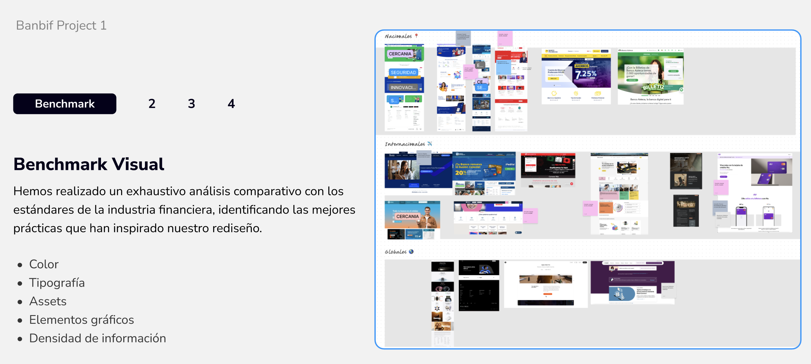
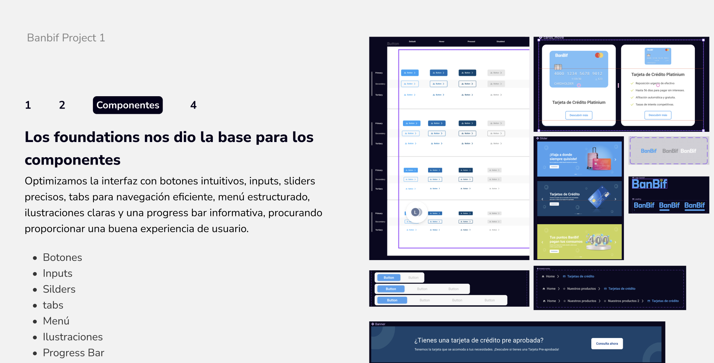
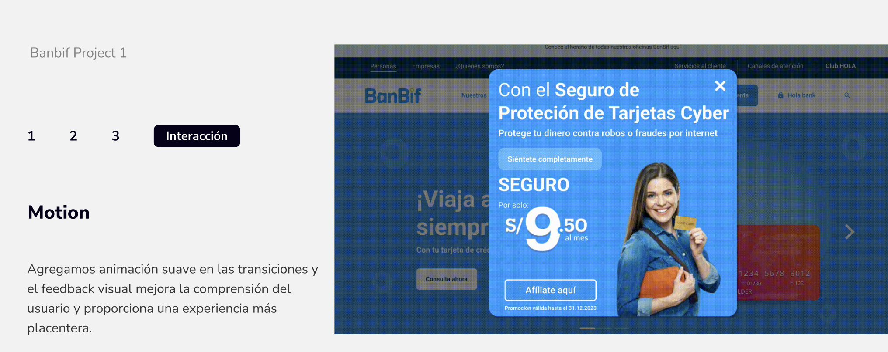
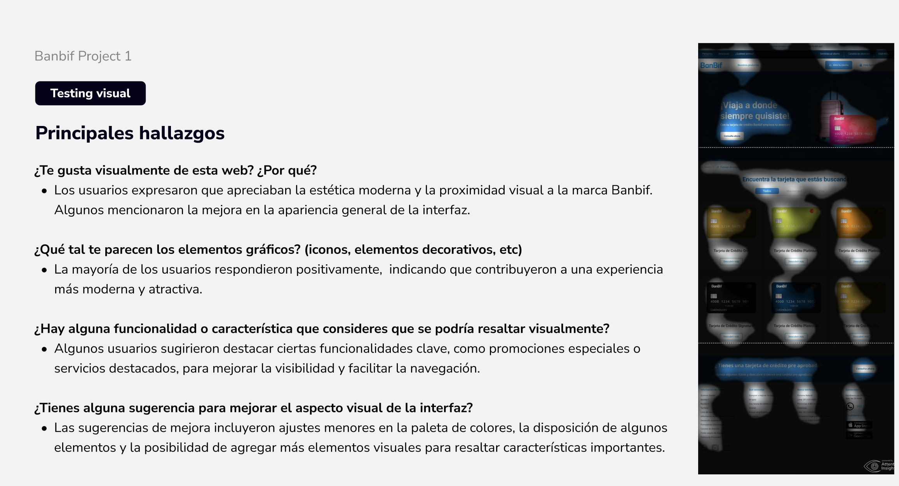

El reto
Reto de bootcamp enfocado en rediseñar la plataforma web de Banbif (tarjetas de crédito). Partí de un benchmark competitivo — bancos nacionales, internacionales y globales — para definir color, tipografía, assets y densidad de información antes de tocar UI.

Benchmark visual — estándares de la industria financiera que inspiraron el rediseño
UI/UX Designer — reto de bootcamp
Cubrí el proceso completo: benchmark, foundations, sistema de componentes, motion, y testing visual con usuarios reales para validar la dirección antes de cerrar el diseño.
Componentes con estados + motion, no solo pantallas
Con esos foundations construí un set de componentes documentado por estados (default, hover, pressed, disabled) — botones primarios, secundarios y terciarios, inputs, sliders, tabs, menú, ilustraciones y progress bar.

Componentes con estados — los foundations dieron la base para optimizar botones, inputs, sliders y navegación
Agregué motion en las transiciones para reforzar el feedback visual (heurística de Nielsen #1, visibilidad del estado del sistema).

Motion — feedback visual en transiciones para mejorar la comprensión del usuario
Para el flujo de compra de tarjeta comparé un formulario único vs. un wizard paso a paso; elegí el wizard para reducir carga cognitiva en un proceso financiero sensible (chunking, Ley de Miller).
Reto de bootcamp con tiempo definido
Sin equipo de diseño adicional y con un plazo fijo de bootcamp, prioricé validar la dirección visual con testing real antes de invertir tiempo en pulir cada pantalla — reduciendo el riesgo de iterar sobre una base equivocada.
Testing visual: estética validada, oportunidades identificadas
Los usuarios valoraron la estética moderna y la cercanía a la marca Banbif, y percibieron los elementos gráficos como más modernos y atractivos — también sugirieron destacar más las promociones y servicios clave, feedback que documenté para una siguiente iteración.

Principales hallazgos del testing visual